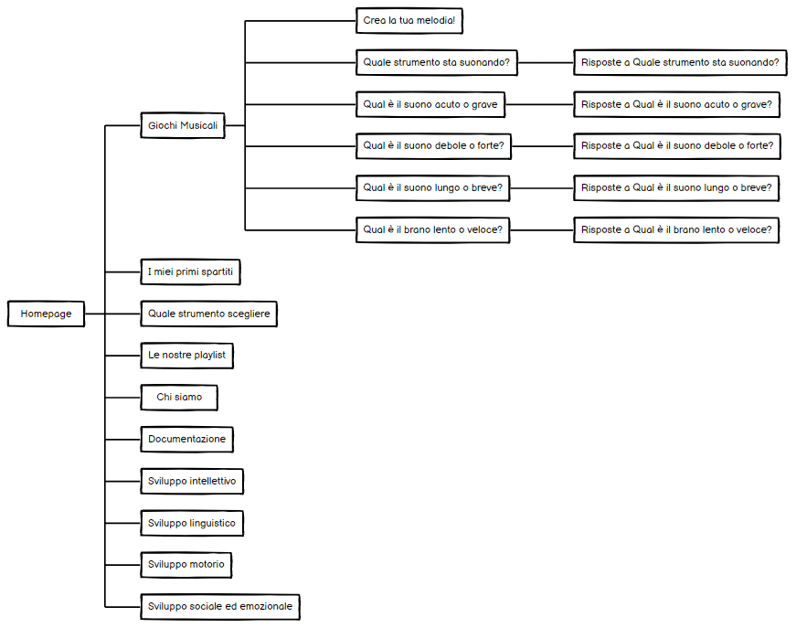

MusiKids è un sito web dedicato alla pedagogia musicale che si pone come obiettivo la sensibilizzazione dei genitori sulle potenzialità di un'educazione a suon di note!
La risorsa è pensata quindi per incoraggiare i genitori ad introdurre i propri figli alla musica e per offrire loro un supporto iniziale in questo percorso educativo,
guidandoli nella scelta dello strumento più adatto, offrendo una lista di partiture agevoli e in linea coi gusti infantili e proponendo loro apposite playlist e divertenti giochi interattivi pensati per i più piccoli, utili a destare in loro interesse e passione per la musica.
OBIETTIVI
MusiKids vuole incoraggiare i genitori a far intraprendere un percorso educativo musicale ai propri figli e guidarli e supportarli nella fase iniziale del percorso.
TARGET UTENTE
Il target principale del sito sono le famiglie con bambini fino ai 10 anni circa.
COMPETITORS
Vari sono i siti che affrontano tematiche quali i benefici della musica sullo sviluppo del bambino, primi tra tutti nostrofiglio.it e uppa.it. Tuttavia, i due siti non hanno la mission di MusiKids: essendo blog dedicati alla genitorialità e all'infanzia, la correlazione bambino-musica non è il tema principale dei loro articoli. Inoltre, i due portali non presentano un chiaro percorso di navigazione che possa portare l'utente ad informarsi su queste tematiche. Entrambi i siti hanno il pregio di mostrare contenuti di qualità, ma se Nostrofiglio.it gode di una grafica attrattiva e di una brand identity stabilita, lo stesso non si può dire di Uppa.it.
Likert Scale di Nostrofiglio: 4/5 e di Uppa.it: 2.5/5
Luiraffimarti.it potrebbe costituire un competitor per la sezione dedicata agli spartiti, ma il sito propone solamente spartiti per pianoforte. Le partiture sono molto accattivanti: i brani scelti sono adatti alla fascia d'età interpellata, e così anche la grafica colorata. I difetti di Luiraffimarti.it sono però evidenti: gli spartiti sono a pagamento, disponibili sono in formato cartaceo e costituiscono uno dei prodotti materiali venduti dal sito, perciò non si può usufruirne immediatamente. Il sito è progettato in modo caotico e le scelte grafiche ormai datate non aiutano l'utente a orientarsi. Inoltre, il sito ha l'obiettivo di insegnare da zero ai bambini a suonare il pianoforte, ma la scelta di un lessico molto tecnico e specializzato (già presente nella barra di navigazione) non si addice a un pubblico così giovane e inesperto.
Likert scale: 2/5
Gioco.it offre diversi giochi online gratuiti per bambini ma molti dei giochi proposti non sono tradotti in italiano e, per di più, il loro funzionamento non è intuitivo: scelta rischiosa quando il target del sito è giovanissimo e quindi non dotato di un buon livello di inglese o addirittura incapace di leggere. In secondo luogo, i giochi musicali sono solo una minima parte dell'intero database e organizzati in una categoria raggiungibile solo digitando “giochi di musica” nella Search Bar. L'apertura di ogni gioco è resa irritante a causa dei diversi secondi di pubblicità. Infine, i giochi proposti non hanno alcuna finalità educativa.
Likert Scale: 1/5
ARCHITETTURA DEL SITO

WIREFRAME
Sviluppo sociale ed emozionale PDF
Quale strumento sta suonando? PDF
Qual è il suono acuto o grave? PDF
Qual è il suono debole o forte? PDF
Qual è il suono lungo o breve? PDF
Qual è il brano lento o veloce? PDF
Quale strumento scegliere? PDF
LOOK AND FEEL
Il logo riprende le scelte grafiche del sito: palette e font. I font utilizzati sono “Questrial”, principalmente per i titoli, e “Alegreya”, per i contenuti testuali più lunghi: la scelta della combinazione è scaturita dalla lettura di un articolo che suggerisce una serie di efficaci font pairings. La palette è composta da White, Karaka, una tonalità di grigio #f2f2f2 e da una totalità di verde #9da658: i colori sono abbinati tra loro in un mix di tendenza, piacevole e rilassante alla vista. Il contrasto chiaro/scuro non è eccessivamente accentuato, e la tonalità di verde dà il tocco di colore alla pagina, trasmettendo un senso di rasserenante sicurezza. Anche le foto del sito sono state scelte sulla base di questo principio grafico. La sezione dedicata ai bambini è, invece, una full immersion nei colori e nei suoni: come area ludica che vuole attirare l'attenzione del bambino, i colori delle immagini sono sgargianti e le illustrazioni prendono il posto delle foto.
LINGUAGGI WEB
- HTML5
- CSS3
- JavaScript
TOOLS PER LA PROGETTAZIONE
- Visual Studio Code come text editor
- JQuery per Onclick event
- Bootstrap per Buttons, Card, Carousel, Navbar, Dropdowns, Forms
- FontAwesome per le icone della barra di navigazione
- Pexels, Pixabay e Google Immagini per le immagini
- Adobe Color per la palette di colori
- Google Fonts per i font
- Canva per la creazione del logo e delle immagini dei giochi musicali
- Icon Scout per le immagini/icone dei giochi
- YouTube per la creazione dell'account e delle playlist
- GarageBand per la registrazione dei suoni
- Balsamiq per il diagramma ad albero e il wireframe
- Chatra per la live chat
- Github per la pubblicazione
- Google Analytics per il monitoraggio del sito
- Instagram e Facebook per gli account social
MusiKids è un portale usufruibile dai genitori fin dal momento della scelta se introdurre i propri figli alla musica fino alle prime fasi del percorso, caratterizzandosi, in questo, come un'originalissima guida digitale molto intuitiva e di semplice utilizzo, perché il sito risulta essere contenutisticamente esaustivo ma comunque non eccessivamente articolato e, soprattutto, dotato di percorsi di navigazione chiari. La scelta di porre varie sezioni inerenti all'educazione musicale mira a creare un portale che sappia rispondere alle varie necessità dell'utente che si sta approcciando alla pedagogia musicale: il nostro valore aggiunto che ci distingue dai competitors è proprio quello di essere un effettivo supporto alle famiglie, anche a livello pratico.
Il progetto si prefigge di divulgare informazioni circa l'educazione musicale per bambini, informando i genitori a riguardo dei suoi benefici. Inoltre, vuole supportare le famiglie che vogliano inserire la musica nella vita dei loro piccoli, mettendo loro a disposizione strumenti utili ad un avvicinamento ludico a quest'arte.
Il sito si rivolge ad un pubblico specifico: famiglie con figli in età prescolare e in prima età scolare. Progettato per essere usufruito da un pubblico adulto (per le competenze necessarie alla navigazione in rete e alla comprensione di informazioni tecniche), MusiKids propone anche una sezione di giochi dedicati ai bimbi, e quindi composta da un'interfaccia di immediata comprensione visiva. Target secondari potrebbero essere insegnanti ed educatori interessati alle tematiche.
La scelta di creare account social è motivata dalle ricerche condotte riguardanti i dati demografici dei social media: l'87% delle persone di età compresa fra 30 e 49 anni (che si presume essere la fascia d'età del nostro target) usa YouTube, il 79% usa Facebook e il 47% usa Instagram. Il target viene quindi raggiunto attraverso social e passaparola virtuale (Whatsapp) e non; infatti, ciò che può aiutarci a raggiungere il target è la promozione del sito sui canali appropriati (per es. gruppi Facebook di genitori, di scuole o di appassionati di musica).
MusiKids vuole incoraggiare i genitori non specializzati a intraprendere coi loro figli un percorso nella musica, approfittando delle finalità educative per divertirsi insieme. Il nostro sito vuole unire l'utile al dilettevole, supportandoli nei primi passi del loro cammino che proseguirà attraverso lo studio della musica presso scuole specializzate.
La promozione del sito sarà condotta attraverso i social e app di messaggistica.
MusiKids ha raggiunto gli obiettivi che ci eravamo prefissati, riuscendo a coinvolgere diversi utenti nel progetto, come si può vedere dalle statistiche qui di seguito. L'obiettivo di ottenere 50 visite da parte di utenti unici è stato superato, così come quello di raggiungere almeno 50 follower sulla pagina Instagram e 10 su quella di Facebook: si può notare anche che la maggior parte di essi siano proprio genitori con figli in età scolare, che avranno quindi trovato interessante MusiKids. È stato inoltre gratificante leggere i messaggi che ci ha inviato chi ha apprezzato il nostro progetto.